Announcement
December Holiday Break
Students should complete holiday assignments and revise for the Term 1 opener examination 2027.


Clubs, sports, arts and culture, the latest school news, and everything happening around the School this term.
Latest from the school
Announcements, achievements and stories from around the school.

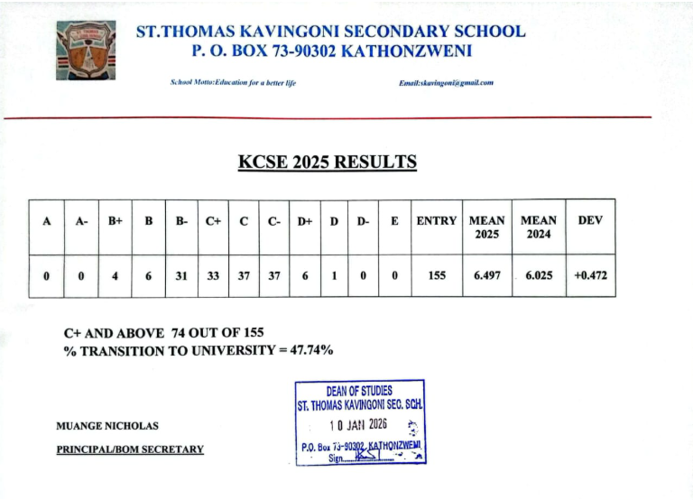


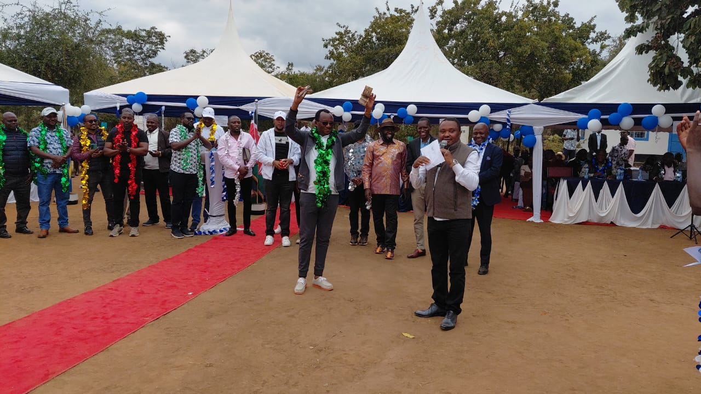
Learning continues through teamwork, creativity, competition, service and discovery.

Football builds teamwork, discipline, fitness and a strong competitive spirit. Learners take part in training sessions, friendly matches and tournaments while developing ball control, passing, tactical awareness, leadership and respect for teammates, opponents and officials.

Volleyball develops coordination, agility, communication and teamwork. Through drills, practice games and competitions, learners build skills in serving, passing, setting, attacking and defending while learning to make quick decisions and support one another.

Basketball promotes confidence, endurance, leadership and resilience. Learners participate in training and matches that strengthen dribbling, shooting, passing, defending, teamwork and strategic thinking in a fast-paced sporting environment.

Debate Club builds confidence, critical thinking and public speaking skills. Learners research topics, prepare arguments and participate in structured debates. They learn how to present ideas clearly, listen to opposing views and respond logically. Debate also improves communication skills, teamwork and awareness of current affairs and social issues.
Music and Choir celebrate talent, culture and self-expression through singing, instruments and performance. Learners practise vocal techniques, harmonies, traditional and contemporary songs, rhythm and stage presentation while preparing for school events and competitions.
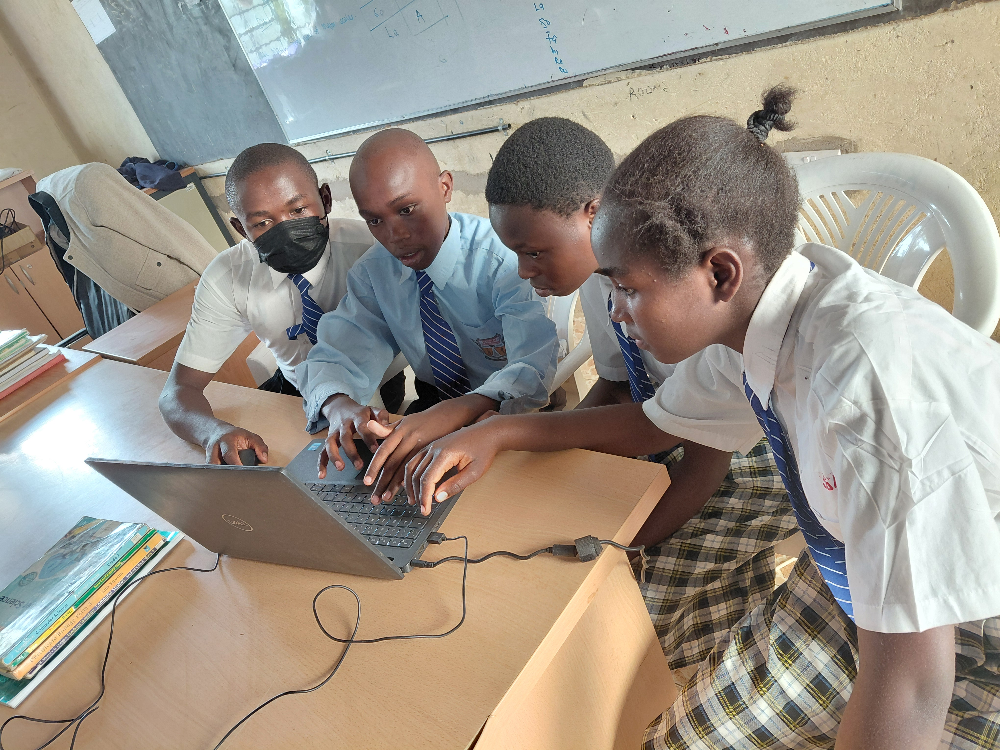
ICT Club introduces learners to computers, coding, robotics and digital innovation. Activities may include typing, graphic design, programming, online safety, digital research and practical technology projects that prepare learners for a digital future.

Environmental Club promotes responsibility for the natural world through tree planting, recycling, clean-up activities and conservation awareness. Learners take part in projects that encourage sustainable habits, teamwork and active care for their school and community environment.

Science Club encourages curiosity, experimentation and innovation. Learners engage in simple experiments, science projects, exhibitions and research activities in biology, chemistry and physics. They also participate in science fairs and competitions. The club helps learners develop analytical thinking, problem-solving skills and a deeper understanding of scientific concepts in real-life applications.

This club focuses on leadership, discipline, survival skills and community service. Learners participate in camping, hiking, first-aid training, drills, and community projects. They learn responsibility, teamwork, self-reliance and respect for others. Scouts and Girl Guides also promote patriotism, moral values and personal development.

This club trains learners in basic first aid, emergency response and health awareness. Activities include learning how to handle injuries, CPR basics, hygiene education and community health outreach. Learners develop compassion, responsibility and readiness to help others in emergencies.

Journalism Club develops writing, reporting and communication skills. Learners produce school magazines, newsletters, photography and video content. They also learn interviewing, editing and storytelling techniques. The club builds creativity, confidence and awareness of current events within and outside the school.

Young Farmers Club is common in many Kenyan schools due to the importance of farming. Learners engage in crop production, animal husbandry, greenhouse farming and school garden projects. They learn practical farming skills, sustainability and food production techniques. The club promotes self-reliance, responsibility and appreciation of agriculture as a career.

Mathematics Club enhances learners’ problem-solving, logical reasoning and analytical skills. Learners engage in mathematical puzzles, competitions, quizzes and Olympiad-style challenges. They explore topics such as algebra, geometry, statistics and number theory in deeper and more practical ways. The club builds confidence in handling complex problems and encourages creativity in mathematical thinking.

Christian Union provides a platform for spiritual growth, moral guidance and fellowship among learners. Activities include Bible study, prayer meetings, worship sessions, choir ministry and guest speaker sessions. The club promotes Christian values such as integrity, love, discipline and service to others. It also encourages learners to develop strong moral character and positive behavior in school and society.

Young Christian Students (YCS) is a faith-based club that nurtures spiritual development, leadership and social responsibility among learners. Members participate in Bible reflection, group discussions, community service and peer support activities. The club emphasizes living out Christian values in daily life, promoting justice, peace and solidarity. It also helps learners grow in faith while actively contributing to the well-being of the school and wider community.

St Thomas Kavingoni Senior School warmly values its Muslim community for its contribution to unity, moral guidance, and the promotion of peaceful coexistence. Their support strengthens our school community, nurtures mutual respect, and enriches our learners' social and spiritual development. We celebrate our diversity and remain united in our shared commitment to education and excellence.

The Peace (Amani) Club is a co-curricular student organization dedicated to promoting harmony, unity, and non-violent conflict resolution within the school and local community. Through peer mediation, active dialogue, leadership training, and engaging activities like strategy games and peace campaigns, the club equips learners with crucial skills in emotional intelligence, critical thinking, and problem-solving. By encouraging mutual respect and civic responsibility, the Peace Club helps cultivate a safe, inclusive, and disciplined environment where students grow into compassionate, responsible leaders.
Celebrating creativity, talent and Kenyan heritage.
Our music club delivered a captivating choir performance at the Kibabii University-National Music Festival.
The choir, "Walking in Jerusalem", explored themes of education and ambition, resonating deeply with audiences.
Our music club delivered a captivating choir performance at the Kibabii University-National Music Festival.
The song, "Maadili Mema" explored themes of discipline and ambition, resonating deeply with audiences.
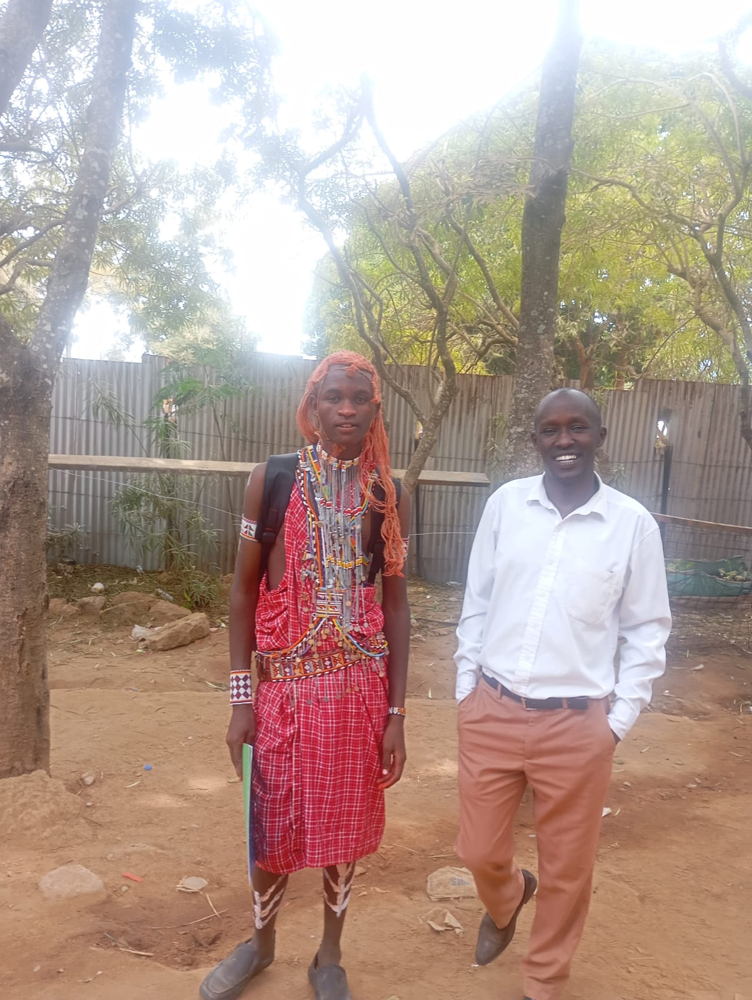
Cattle are our wealth, our pride, and our living treasure. They feed our children and make our homes better. With milk in the morning and strength through the day, they guide our community in a meaningful way.
Goats and sheep bring hope when times are hard. They are carefully loved, protected, and guarded. Our livestock unite us, young and old alike. They teach us responsibility, courage and pride.
A glimpse into the places, activities, and experiences that make our school community special.

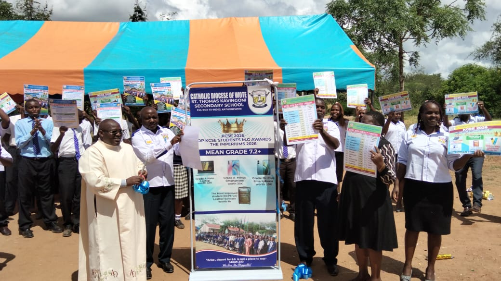

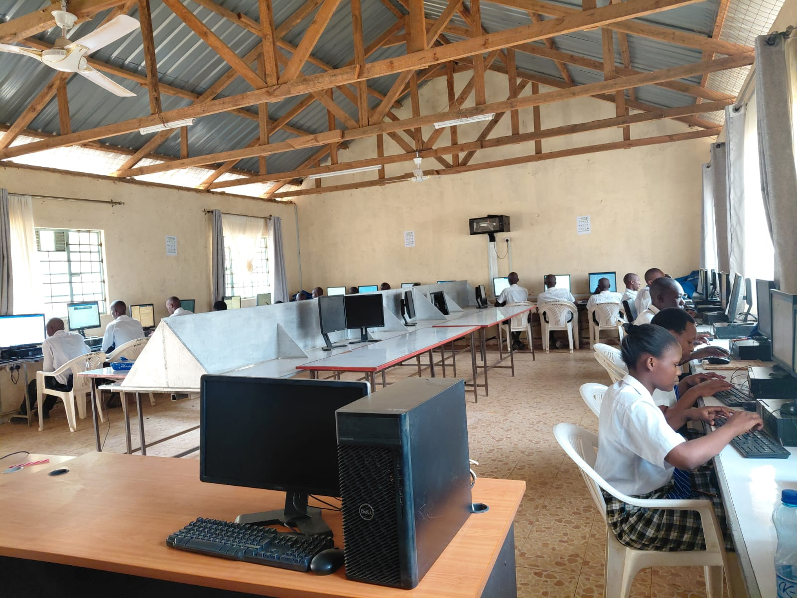
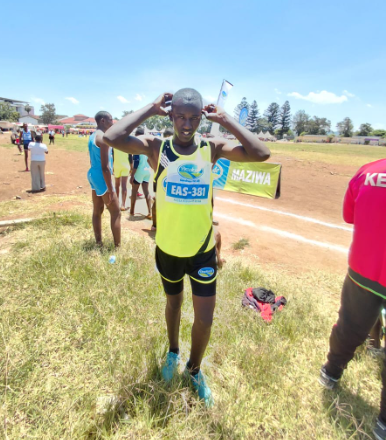


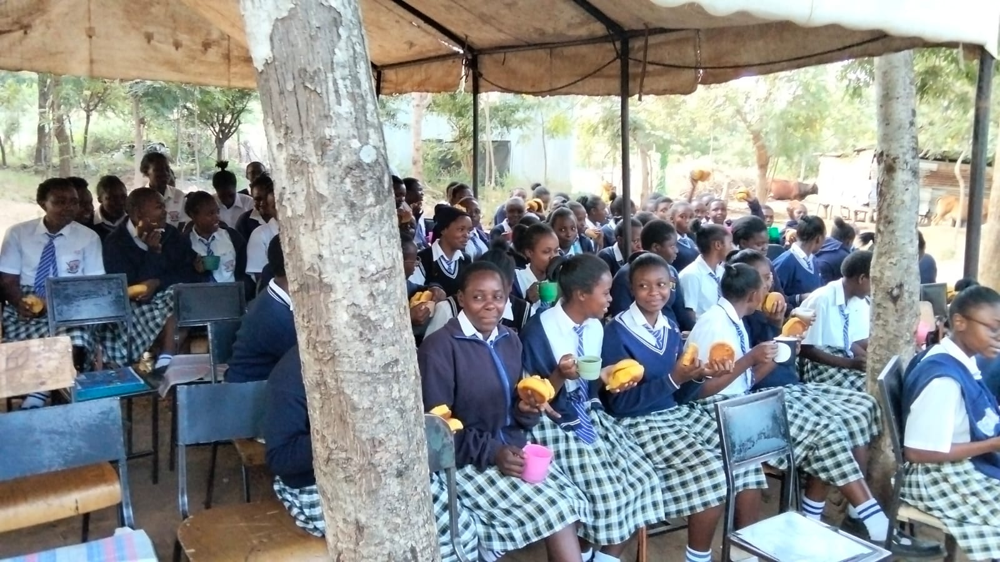
.jpg)

.jpeg)

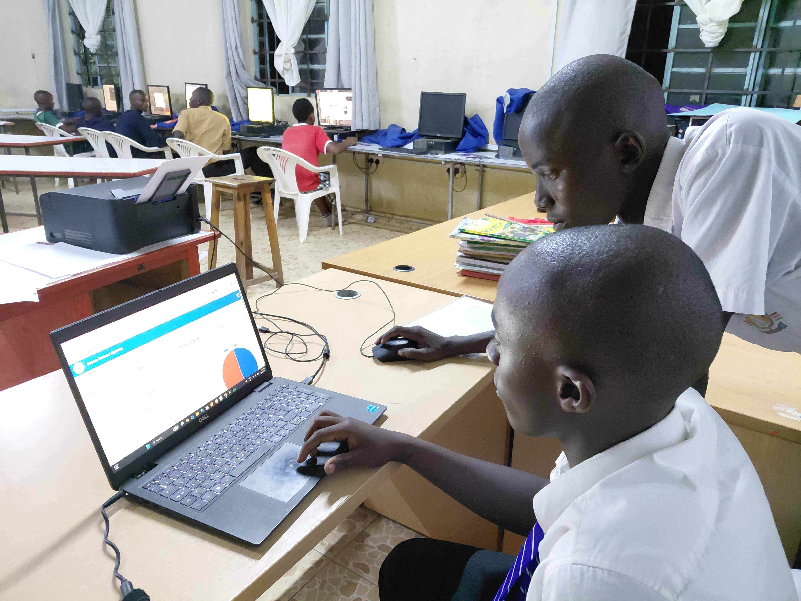
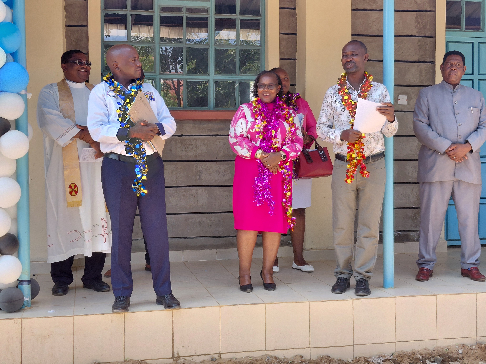
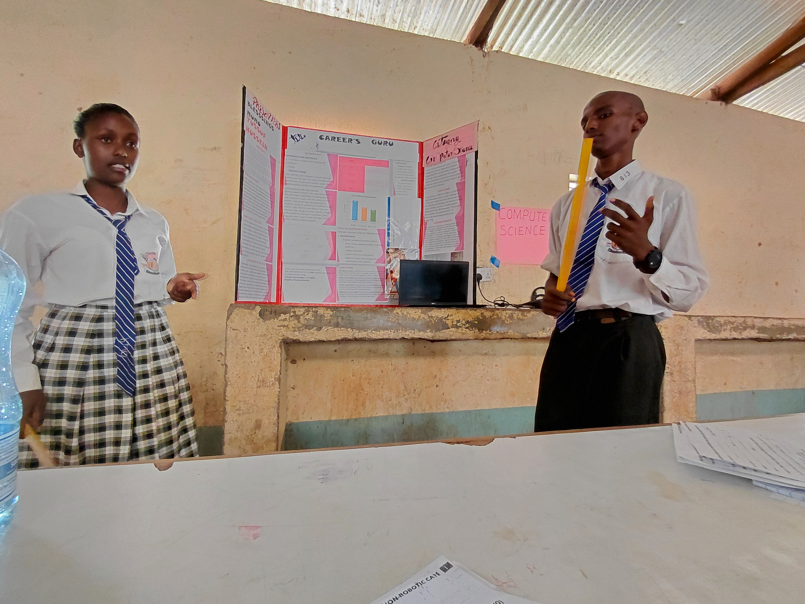
.jpeg)
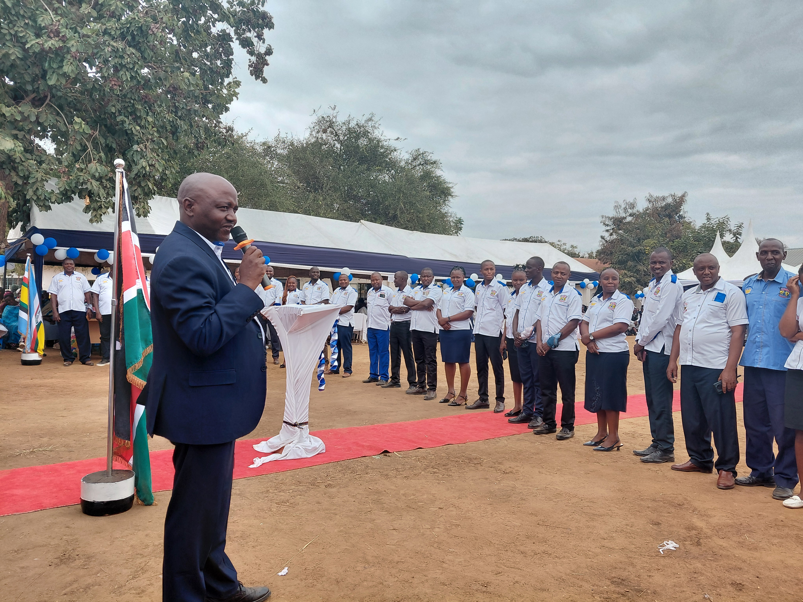

.jpeg)

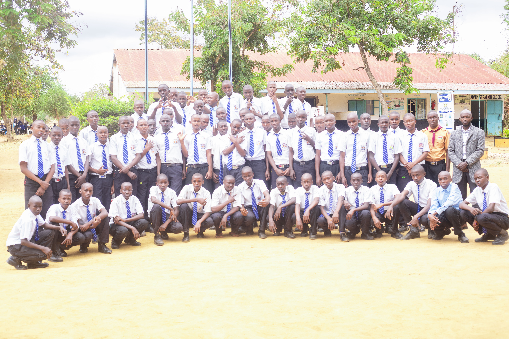


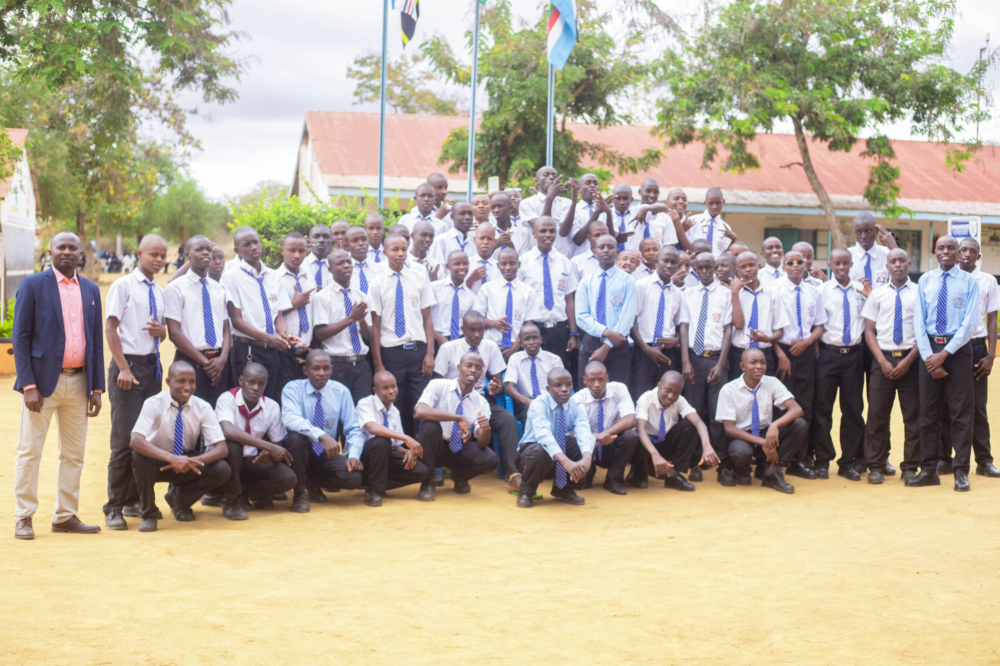
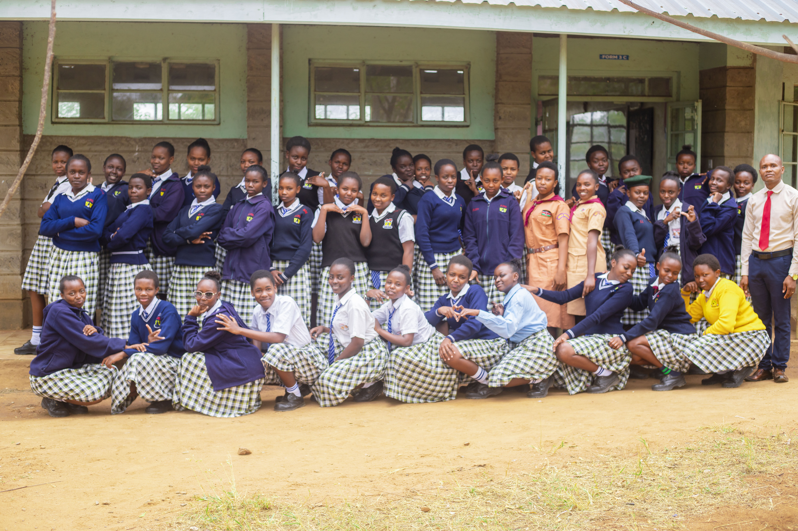


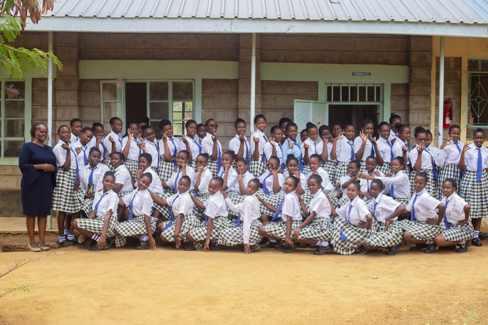
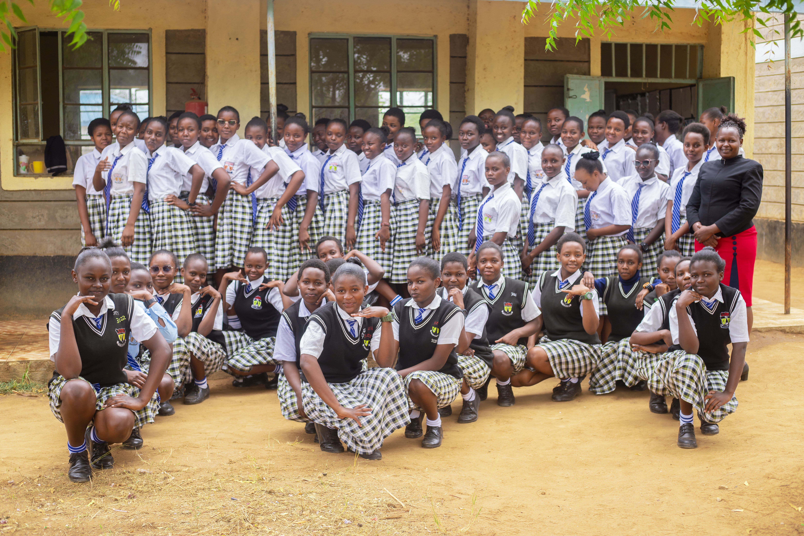